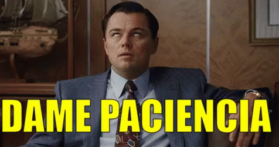

Vamos continuar nossos estudos, agora aprendendo algumas técnicas e formas de calcular a porcentagem...
Vamos quebrar as barreiras...
Pois são muitas emoções e muitas formas de calcular as porcentagens, continuamos a aprender...
Não te falei?
Tem tantas formas de se calcular a porcentagem que você pode escolher a que mais se sentir a vontade de usar.
Agora que já vimos as diversas formas de se calcular a porcentagem, vamos ao que interessa e ver uma de suas aplicações em um exercício prático de desconto.
E mantenha a calma pessoinha!!! Não é só de descontos que se vive no mundo matemático da porcentagem! Também existem os acréscimos...